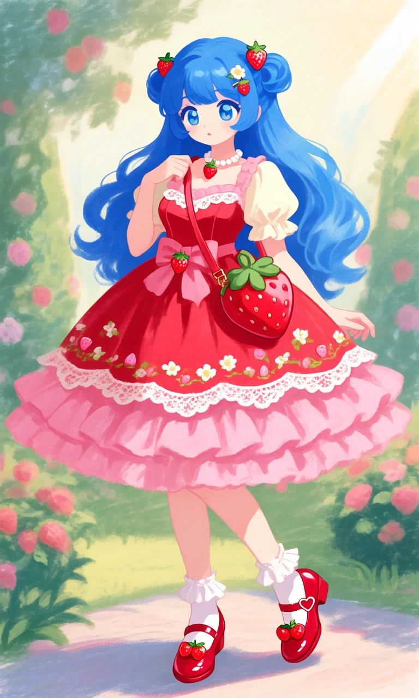
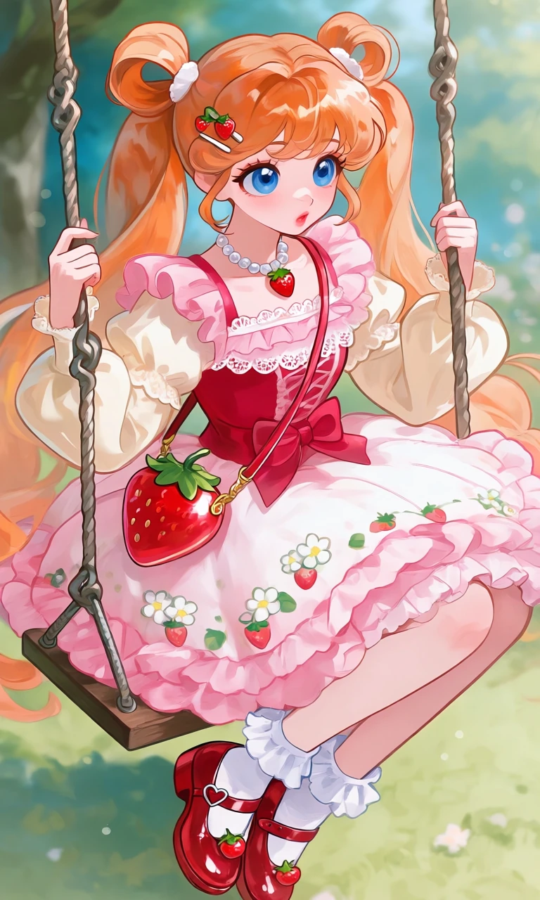

Strawberry Shortcake Picnic

Outfit Prompt
She wears an adorable strawberry-themed Lolita dress with a fluffy bell-shaped skirt, strawberry-red bodice, cream-colored puff sleeves, scalloped white lace, and layers of pink ruffles. Tiny strawberries and delicate white flowers decorate the skirt. A large strawberry-shaped bow sits at her waist.
Accessories include a miniature strawberry handbag, a pearl necklace with a strawberry charm, and tiny strawberry hair clips decorating her side buns.
Her shoes are shiny cherry-red Mary Janes with heart-shaped buckles, white frilly ankle socks, and little strawberry decorations on the toes.
Outfit Examples



